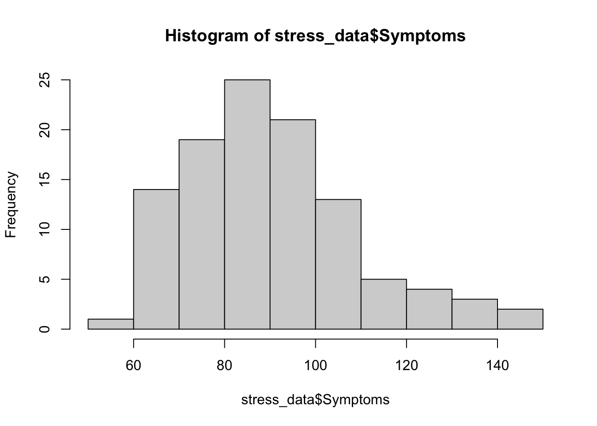
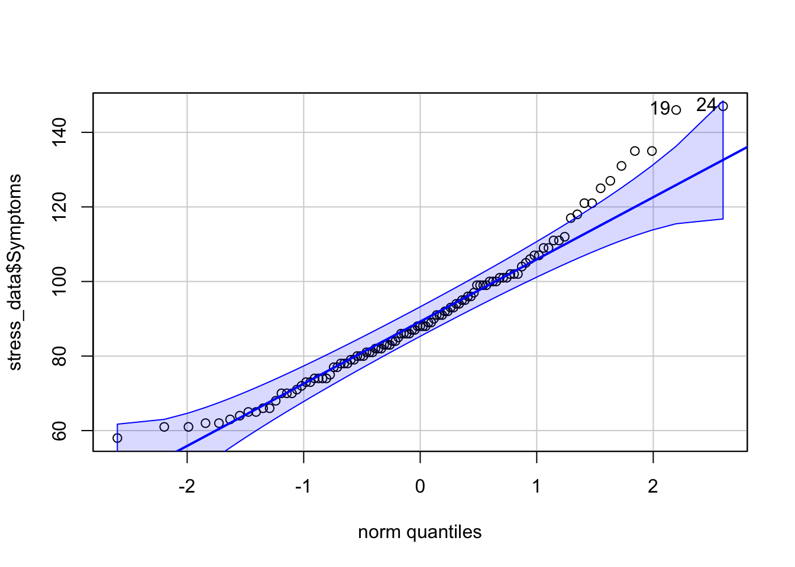
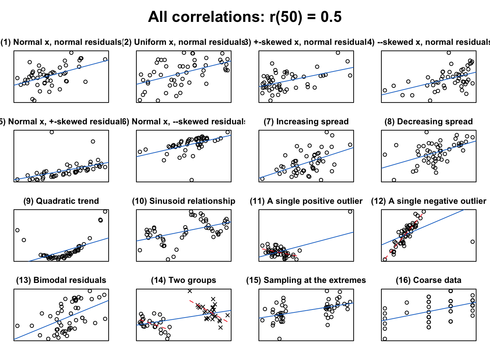

In this week’s readings and lecture we covered correlation and regression. In what follows we will revisit the ideas from this week’s readings and notes, making explicit callbacks to topics from slides and using an example. The examples from this page involve R. For a tutorial on how to perform similar analyses in SPSS, please look to my youtube channel. .
Please note that this walkthrough assumes that you have the following packages installed and loaded in R:
pacman::p_load(car, # qqPlot function cowplot, # apa plotting tidyverse, # tidyverse goodness psych, # descriptive stats lm.beta # getting a standard coefficient )
The downloaded binary packages are in
/var/folders/7k/6v7xmh35305_vjzy660s9_q40000gs/T//RtmpBPdxC2/downloaded_packages
lm.beta installed
The Relationship b/tw Stress and Health
Wagner, Compas, and Howell (1988) investigated the relationship between stress and mental health in first-year college students. Using a scale they developed to measure the frequency, perceived importance, and desirability of recent life events, they created a measure of negative events weighted by the reported frequency and the respondent’s subjective estimate of the impact of each event. This served as their measure of the subject’s perceived social and environmental stress. They also asked students to complete the Hopkins Symptom Checklist, assessing the presence or absence of 57 psychological symptoms.
This data can be accessed directly from this companion website for Howell’s stats textbook (a book I used a while back).
vars n mean sd median trimmed mad min max range skew
ID 1 107 54.00 31.03 54.00 54.00 40.03 1.00 107.00 106.00 0.00
Stress 2 107 21.29 12.49 20.00 20.49 11.86 1.00 58.00 57.00 0.62
Symptoms 3 107 90.33 18.81 88.00 88.87 17.79 58.00 147.00 89.00 0.74
lnSymptoms 4 107 4.48 0.20 4.48 4.48 0.19 4.06 4.99 0.93 0.21
kurtosis se
ID -1.23 3.00
Stress -0.19 1.21
Symptoms 0.45 1.82
lnSymptoms -0.28 0.02
Testing our assumptions
Here we are interested in the relationship between perceived Stress (as measured on a scale factors the number and impact of negative life events) and the presence of psychological Symptoms. As with any other parametric analysis, we first need to see if our data adheres to the assumptions of normality and homogeniety of varience. We can use the tools we’ve been employing for the last few weeks test these assumptions:
First Stress:
hist(stress_data$Stress,breaks =10)
car::qqPlot(stress_data$Stress)
[1] 72 55
You might notice that the plotting functions that I’ve used here are NOT ggplots. In truth, for simple histograms and qqplots I just use the functions above. What’s nice about the car::qqplot() is that it highlights the extreme values, in this case participants 55 and 72. When putting together anything that invoves complex subsetting or presenting and publishing data, ggplot is my preferred method.
Eyeballing the plots, our Stress measures look slightly skewed, but not egregiously so. Let’s take a look at the skew and kurtosis values. Remember that this entails dividing our skew value (from psych::describe of psych::skew by the standard error of the skew. Recall, to get the standard error of the skew, the best way is to bootstrap a sampling distribution.
Here I’m just going to bootstrap the skew using DescTools::Skew() and get the 95% CI
Then to get the standard error I can just divide the range of the ci by 3.92 (95% of a normal distribution falls withing ±1.96 SD of the mean; the standard error = 1 SD).
Observed SE Mean Bias
mean(Stress) 21.28972 1.201429 21.28782 -0.001896262
You’ll note that the output of this function (boot_skew_data$stats) gives us the:
empirically Observed sample statistic, in this case the skew of our original sample (0.618)
the standard error of the sampling distribution SE = .179
the Mean of the sampling distribution
and the Bias, the difference between the original sample statistic and the Mean of the sampling distribution.
If so inclined I could get the distribution of skews by invoking $replicates. (See next section)
Recall that we would then divide our the skew of the actual sample by the SE and evaluate the result against the criteria mentioned in class. (Again if we are being diligent we would repeat this for kurtosis).
Finally, we might invoke the Shapiro-Wilkes test (\(W\)) of normality by comparing our observed distribution against a theoretical normal. Here the null hypothesis is that the \(observed == theoretical\), where \(p < .05\) indicates that the observed distribution is not normal. Our obtained p-value confirms suggests the possibility that Stress measures deviate from normal.
shapiro.test(stress_data$Stress) # see Field (2014), Sec 5.6.1
Shapiro-Wilk normality test
data: stress_data$Stress
W = 0.96009, p-value = 0.002709
However, as noted in the Field text (5.6.1) we need to be careful using the Shapiro-Wilkes test on large samples. Ultimately you need to make a judgment on whether or not all of the evidence available leads you to the conclusion of non-normality. In this case I probably would trust the normality of this data due to what I see in the Q-Q plot (very few large deviations from the normal line).
Now Symptoms
hist(stress_data$Symptoms,breaks =10)

psych::describe(stress_data$Symptoms)
vars n mean sd median trimmed mad min max range skew kurtosis se
X1 1 107 90.33 18.81 88 88.87 17.79 58 147 89 0.74 0.45 1.82
car::qqPlot(stress_data$Symptoms)

[1] 24 19
shapiro.test(stress_data$Symptoms) # see Field (2014), Sec 5.6.1
Shapiro-Wilk normality test
data: stress_data$Symptoms
W = 0.95918, p-value = 0.00232
Symptoms does not pass either the eyeball or the Shapiro-Wilkes tests. These data are slightly positively skewed. Let’s use bootstrapped standard error of the skew to evaluate whether we have a meaningful deviation:
Using the criteria set forth in Kim (2013), this data is indeed skewed (> 3.29).
One way of dealing with non-normal data is by performing a logarithmic transformation (see Field, 5.8). Logarithmic transformations reduce the weight of extreme scores. For example, consider the following vector:
c(2,4,6,8,100)
[1] 2 4 6 8 100
100 is setting way out to the extreme of the other scores. Now let’s get the log() of this sequence:
The values become more manageable (i.e., closer) at this rescaling.
This has already been performed for this data, lnSymptoms is a natural logarithmic transform of Symptoms. With your own data, this can be accomplished quite simply in R by using the log() as above:
Question 1. Perform a natural log transform of Symptoms and mutate() it to a new column in your data frame TransformedData. Assess TransformedData using a qqPlot:
Plotting the data
One of the first things that you should do is plot your data. Plotting gives you a sense of what is going on with your data. In fact, YOU SHOULD NEVER TAKE A TEST RESULT AT FACE VALUE WITHOUT FIRST LOOKING AT YOUR DATA!! Beware of Anscombe’s quartet!
To really drive this home, let’s look at an example from a function that Jan Vanhove developed as a teaching tool. the function plot_r() takes an input correlation coefficient r and number of observations n and plots 16 very distrinct types of patterns that can be produced. For the sake of not slowing down your machine too much, I’d recommend keeping n at less than 200.
source("http://janhove.github.io/RCode/plot_r.R")plot_r(r =0.5, n =50)

Let’s plot our data using ggplot. In this case we will be creating a scatterplot of our data. This can be accomplished by adding geom_point() to our base ggplot(). For example:
ggplot(stress_data, aes(x = Stress, y = lnSymptoms)) +geom_point() +theme_cowplot() +# turns the plot into something close to APAxlab("Stress") +ylab("lnSymptoms")
Question 2: create a ggplot scatterplot comparing lnSymptoms to Symptoms What does the result look like. What about this relationship suggests that performing a logarithmic transform may be kosher
Covariance and Correlation
This week’s readings offer excellent overviews of covariance and correlation so I won’t go into too much depth here. Briefly, let’s make a few connections to ideas that we’ve already encountered.
Covariance
Recall that variance may be calculated as: \(s_{x}^{2}=\frac{\sum \left ( x_{i}-\bar{X} \right )^{2}}{n-1}\)
Where the numerator is the sum of squared differences from each score to the sample mean, and the denominator is our degrees of freedom.
Variance tells us to what degree scores in a particular sample variable deviate from its mean. With this in mind, covarience is a statement about the degree to which two sampled variables deviate from their respective means. Consider we have sampled two measures, X & Y from a population. When addressing the degree to which X and Y co-vary, we are asking the question: “To what degree and in what direction does Y move away from its mean as X moves from its mean?”
As such, the formula for covariance is simply an extension of the formula for variance that we already know: \[s_{xy}=\frac{\sum \left ( x_{i}-\bar{X} \right )\left ( y_{i}-\bar{Y} \right )}{n-1}\]
So, in order to calculate the covariance we need the calculate the sum of the cross-product of the sum of squared differences of our two variables (X = Stress; Y = lnSymptoms) and divide that number by of degrees of freedom. We could go about the business of calculating this “by hand”:
# N = number of rows in data frameN <-nrow(stress_data)#mean Stress:meanX <-mean(stress_data$Stress)# and same for lnSymptoms:meanY <-mean(stress_data$lnSymptoms)# plug these values into our equation:# sum of cross productnumerator <-sum((stress_data$Stress-meanX)*(stress_data$lnSymptoms-meanY))# degrees of freedomdenominator <- (N-1)# covariance:covXY <- (numerator/denominator) %>%print()
[1] 1.336434
The covariance of Stress and lnSymptoms is 1.336.
Question 3: Alternatively, covariance may be calculated quickly in R using the cov() function: Remember, once you open up a function, you can press the TAB key to get prompts about what to put in each argument.
# use cov() to calculate the covariance between stress_data$Stress and stress_data$lnSymptoms
Correlation
It may be tempting to calculate our covariance and stop there, but covariance is a limited measure. What I mean by this is that covarience indexes the degree of relationship between two specific variables, but doesn’t allow for more general comparison across situations. For a quick example, lets multiply both Stress and lnSymptoms by two. Let’s use mutate() to create a these by2 columns:
We would like to think that multiplying every value by a constant should have no effect on our general interpretation of the relationships in our data as the overall relationship in our data remain the same. To help make this apparent, let’s imagine that I weigh 200 lbs (yea… imagine) and my wife weighs 100 lbs. So I weigh twice as much as my wife. Over the next year we both go on a binge fest and both double our respective weights—I’m now 400 lbs and my wife is 200 lbs. I still weigh twice as much as my wife. Coincidentally the fact that relationships remain unchanged in spite of these sorts of mathematical transformations is why we could perform the natural logarithmic transform earlier and not feel too guilty.
Question 4: Well what happens when I get the covariance of my new _by2 data?:
# use cov() to calculate the covariance between stress_data$Stress_by2 and stress_data$lnSymptoms_by2
The covariance changes!! This is a problem, and is why, in order to usefully convey this data we report the correlation. The correlation is a standardized covariance.
The unit of measurement we’ll use for standardization is the standard deviation. We can standardize the covariance in one of two ways:
1. Standardize our variables (into z-scores) and then calculate the covariance: \[r_{xy}=\frac{\sum z_{x}z_{y}}{n-1}\]
2. Calculate the covariance and standardize it (by dividing by the product of the standard deviation): \[r_{xy}=\frac{\sum \left ( x_{i}-\bar{X} \right )\left ( y_{i}-\bar{Y} \right )}{(n-1)s_{x}s_{y}}\]
# get SD of X and Y:sdX <-sd(stress_data$Stress)sdY <-sd(stress_data$lnSymptoms)# using the covXY calculated above:covXY / (sdX*sdY)
[1] 0.5286565
Again, in R we don’t need to do this by hand, there are in fact several functions. A more comprehensive look can be found in Field 6.5.3. The simplest function is cor(), with outputs the correlation as a single value. However, I prefer to use cor.test() as it tends to provide the most immediately useful data. You can input your data into this function in two ways:
Pearson's product-moment correlation
data: Stress and lnSymptoms
t = 6.3818, df = 105, p-value = 4.827e-09
alternative hypothesis: true correlation is not equal to 0
95 percent confidence interval:
0.3765970 0.6529758
sample estimates:
cor
0.5286565
I prefer the latter as it uses formula notation which is the sort of notation we used for t-tests and will continue to use for regression and ANOVA. Finally, if you don’t want all the additional gobble-dee-gook from cor.test you can simply attach $estimate to the end of either the function or object like so:
How did I know that I could do this you ask? To get a quick list of things that you can pull from the attributes, try the attributes() function. It gives you a list of names that you can call using the $ operator.
Question 5 save the cor.test() output of the correlation between Stress and lnSymptoms as an object corOut. Submit corOut to the attributes() function. Grab the p.value and estimate:
# using $ grab the p.value and estimate from corOut
Our correlation is expressed in terms of the Pearson’s product-moment correlation coefficient (or \(r\), for short). Here \(r\) = .529.
Question 6 Rerun the cor.test (no need to get the attributes this time) using the problematic by_2 columns. What do you find relative to the last test?
# calculate the correlation of the "_by2" data:
adjusting Pearsons’s \(r\) by hand
Note that when our sample size is small (N<30) we may need to adjust \(r\). This is because the sampling distribution of \(r\) is not normally distributed, most especially when you have strong correlations. Don’t believe me? Let’s run a simulation, this time assuming a sample size of only 20 people.
cor.test(~Symptoms + Stress, data = stress_data)
Pearson's product-moment correlation
data: Symptoms and Stress
t = 6.3165, df = 105, p-value = 6.559e-09
alternative hypothesis: true correlation is not equal to 0
95 percent confidence interval:
0.3719397 0.6498580
sample estimates:
cor
0.5247429
It may be useful to perform tests of significance on \(r\). Typically, there are two types of tests that we perform:
a test of the observed \(r\) to \(r=0\), and
a test of the difference between two \(r\) values.
Regarding the first case, to test that the observed correlation is different from 0 we can use the aforementioned cor.test():
cor.test(~Stress+lnSymptoms,data = stress_data)
Pearson's product-moment correlation
data: Stress and lnSymptoms
t = 6.3818, df = 105, p-value = 4.827e-09
alternative hypothesis: true correlation is not equal to 0
95 percent confidence interval:
0.3765970 0.6529758
sample estimates:
cor
0.5286565
In the second case, the difference between \(r\) values, we may invoke the paired.r() function from the psych package. For example lets assume that we know that the correlation between GRE scores and GPA for one group of 100 students is 0.50 and for another group of 80 students it’s 0.61. We ask is the correlation for the second group significantly higher than the first. To test the difference between these two independent \(r\)s” we
Call: psych::paired.r(xy = 0.5, xz = 0.61, n = 100, n2 = 80, twotailed = T)
[1] "test of difference between two independent correlations"
z = 1.05 With probability = 0.3
where:
xy: the correlation in the first data set
xz: the correlation in the second data set
n: the number of samples in the first data set
n2: the number of samples in the second data set -twotailed: run a two-tailed test, TRUE or FALSE
This output tells us the resulting Fisher \(z\) score and corresponding probability.
Question 8: For example assume that you sample 35 men and find a correlation of .42 between Symptoms and Stress. In another sample of 42 women you find a correlation of .51. Perform a test to see if those two correlations are different from one another.
# use psych::paired.r to answer Question #8
Source Code
---title: "Correlations"---In this week's readings and lecture we covered **correlation** and **regression**. In what follows we will revisit the ideas from this week's readings and notes, making explicit callbacks to topics from slides and using an example. The examples from this page involve R. For a tutorial on how to perform similar analyses in SPSS, please look to my youtube channel. .Please note that this walkthrough assumes that you have the following packages installed and loaded in R:```{r}pacman::p_load(car, # qqPlot function cowplot, # apa plotting tidyverse, # tidyverse goodness psych, # descriptive stats lm.beta # getting a standard coefficient ) ```## The Relationship b/tw Stress and Health> Wagner, Compas, and Howell (1988) investigated the relationship between stress and mental health in first-year college students. Using a scale they developed to measure the frequency, perceived importance, and desirability of recent life events, they created a measure of negative events weighted by the reported frequency and the respondent's subjective estimate of the impact of each event. This served as their measure of the subject's perceived social and environmental stress. They also asked students to complete the Hopkins Symptom Checklist, assessing the presence or absence of 57 psychological symptoms.This data can be accessed directly from this [companion website](https://www.uvm.edu/~statdhtx/methods8/) for Howell's stats textbook (a book I used a while back).```{r}stress_data <-read_table("https://www.uvm.edu/~statdhtx/methods8/DataFiles/Tab9-2.dat")psych::describe(stress_data)```### Testing our assumptionsHere we are interested in the relationship between perceived **Stress** (as measured on a scale factors the number and impact of negative life events) and the presence of psychological **Symptoms**. As with any other parametric analysis, we first need to see if our data adheres to the assumptions of **normality** and **homogeniety of varience**. We can use the tools we've been employing for the last few weeks test these assumptions:First **Stress**:```{r}hist(stress_data$Stress,breaks =10)car::qqPlot(stress_data$Stress)```You might notice that the plotting functions that I've used here are NOT ggplots. In truth, for simple histograms and qqplots I just use the functions above. What's nice about the `car::qqplot()` is that it highlights the extreme values, in this case participants 55 and 72. When putting together anything that invoves complex subsetting or presenting and publishing data, `ggplot` is my preferred method.Eyeballing the plots, our **Stress** measures look slightly skewed, but not egregiously so. Let's take a look at the skew and kurtosis values. Remember that this entails dividing our `skew` value (from `psych::describe` of `psych::skew` by the standard error of the skew. Recall, to get the standard error of the skew, the best way is to bootstrap a sampling distribution.Here I'm just going to *bootstrap* the skew using `DescTools::Skew()` and get the 95% CI```{r}boot_skew_data <- DescTools::Skew(stress_data$Stress, method =2, ci.type ="bca",conf.level = .95)```Then to get the standard error I can just divide the range of the `ci` by 3.92 (95% of a normal distribution falls withing ±1.96 SD of the mean; the standard error = 1 SD).```{r}standard_error_skew <- (boot_skew_data["upr.ci"] - boot_skew_data["lwr.ci"])/3.92standard_error_skew %>%unname()```Alternatively, we can also estimate this value running some simulations (bootstrapping manually):```{r}boot_skew_data <-tibble(simulation =1:10000) %>%group_by(simulation) %>%mutate(skew_vals =sample(stress_data$Stress,size =107,replace = T) %>% psych::skew())standard_error_skew <-sd(boot_skew_data$skew_vals)```At this point I would also like to introduce you to a slightly easier way of bootstrapping (you've earned it), using the `resample` package:```{r}pacman::p_load(resample)boot_skew_data <- resample::bootstrap(data = stress_data, statistic =mean(Stress),R =10000)boot_skew_data$stats```You'll note that the output of this function (`boot_skew_data$stats`) gives us the:- empirically `Observed` sample statistic, in this case the skew of our original sample (0.618)- the standard error of the sampling distribution `SE` = .179- the `Mean` of the sampling distribution- and the `Bias`, the difference between the original sample statistic and the `Mean` of the sampling distribution.If so inclined I could get the distribution of skews by invoking `$replicates`. (See next section)Recall that we would then divide our the skew of the actual sample by the `SE` and evaluate the result against the criteria mentioned in class. (Again if we are being diligent we would repeat this for kurtosis).Finally, we might invoke the Shapiro-Wilkes test ($W$) of normality by comparing our observed distribution against a theoretical normal. Here the null hypothesis is that the $observed == theoretical$, where $p < .05$ indicates that the observed distribution is *not normal*. Our obtained p-value confirms suggests the possibility that **Stress** measures deviate from normal.```{r}shapiro.test(stress_data$Stress) # see Field (2014), Sec 5.6.1```However, as noted in the Field text (5.6.1) we need to be careful using the Shapiro-Wilkes test on large samples. Ultimately you need to make a judgment on whether or not all of the evidence available leads you to the conclusion of non-normality. In this case I probably would trust the normality of this data due to what I see in the Q-Q plot (very few large deviations from the normal line).**Now Symptoms**```{r}hist(stress_data$Symptoms,breaks =10)psych::describe(stress_data$Symptoms)car::qqPlot(stress_data$Symptoms)shapiro.test(stress_data$Symptoms) # see Field (2014), Sec 5.6.1```**Symptoms** does not pass either the eyeball or the Shapiro-Wilkes tests. These data are slightly positively skewed. Let's use bootstrapped standard error of the skew to evaluate whether we have a meaningful deviation:```{r}boot_skew_data <- resample::bootstrap(data = stress_data, statistic = psych::skew(Stress),R =10000)psych::skew(stress_data$Symptoms)/boot_skew_data$stats$SE```Using the criteria set forth in [Kim (2013)](https://www.ncbi.nlm.nih.gov/pmc/articles/PMC3591587/), this data is indeed skewed (\> 3.29).One way of dealing with non-normal data is by performing a logarithmic transformation (see Field, 5.8). Logarithmic transformations reduce the weight of extreme scores. For example, consider the following vector:```{r}c(2,4,6,8,100)````100` is setting way out to the extreme of the other scores. Now let's get the `log()` of this sequence:```{r}c(2,4,6,8,100) %>%log()```The values become more manageable (i.e., closer) at this rescaling.This has already been performed for this data, **lnSymptoms** is a natural logarithmic transform of **Symptoms**. With your own data, this can be accomplished quite simply in R by using the `log()` as above:**Question 1. Perform a natural log transform of `Symptoms` and `mutate()` it to a new column in your data frame `TransformedData`. Assess `TransformedData` using a qqPlot:**```{r}```## Plotting the dataOne of the first things that you should do is plot your data. Plotting gives you a sense of what is going on with your data. In fact, **YOU SHOULD NEVER TAKE A TEST RESULT AT FACE VALUE WITHOUT FIRST LOOKING AT YOUR DATA!!** Beware of [Anscombe's quartet](https://en.wikipedia.org/wiki/Anscombe%27s_quartet)!To really drive this home, let's look at an example from a function that Jan Vanhove developed as a teaching tool. the function `plot_r()` takes an input correlation coefficient `r` and number of observations `n` and plots 16 very distrinct types of patterns that can be produced. For the sake of not slowing down your machine too much, I'd recommend keeping `n` at less than 200.```{r}source("http://janhove.github.io/RCode/plot_r.R")plot_r(r =0.5, n =50)```Let's plot our data using `ggplot`. In this case we will be creating a scatterplot of our data. This can be accomplished by adding `geom_point()` to our base `ggplot()`. For example:```{r}ggplot(stress_data, aes(x = Stress, y = lnSymptoms)) +geom_point() +theme_cowplot() +# turns the plot into something close to APAxlab("Stress") +ylab("lnSymptoms")```**Question 2: create a ggplot scatterplot comparing `lnSymptoms` to `Symptoms` What does the result look like. What about this relationship suggests that performing a logarithmic transform may be kosher**## Covariance and CorrelationThis week's readings offer excellent overviews of **covariance** and **correlation** so I won't go into too much depth here. Briefly, let's make a few connections to ideas that we've already encountered.### CovarianceRecall that **variance** may be calculated as: $s_{x}^{2}=\frac{\sum \left ( x_{i}-\bar{X} \right )^{2}}{n-1}$Where the numerator is the sum of squared differences from each score to the sample mean, and the denominator is our degrees of freedom.Variance tells us to what degree scores in a particular sample variable deviate from its mean. With this in mind, **covarience** is a statement about the degree to which two sampled variables deviate from their respective means. Consider we have sampled two measures, *X* & *Y* from a population. When addressing the degree to which *X* and *Y* co-vary, we are asking the question: "To what degree and in what direction does *Y* move away from its mean as *X* moves from its mean?"As such, the formula for covariance is simply an extension of the formula for variance that we already know: $$s_{xy}=\frac{\sum \left ( x_{i}-\bar{X} \right )\left ( y_{i}-\bar{Y} \right )}{n-1}$$So, in order to calculate the covariance we need the calculate the sum of the cross-product of the sum of squared differences of our two variables (*X* = **Stress**; *Y* = **lnSymptoms**) and divide that number by of degrees of freedom. We could go about the business of calculating this "by hand":```{r covariance and correlation by hand}# N = number of rows in data frameN <-nrow(stress_data)#mean Stress:meanX <-mean(stress_data$Stress)# and same for lnSymptoms:meanY <-mean(stress_data$lnSymptoms)# plug these values into our equation:# sum of cross productnumerator <-sum((stress_data$Stress-meanX)*(stress_data$lnSymptoms-meanY))# degrees of freedomdenominator <- (N-1)# covariance:covXY <- (numerator/denominator) %>%print()```The covariance of Stress and lnSymptoms is **1.336**.**Question 3: Alternatively, covariance may be calculated quickly in `R` using the `cov()` function:** Remember, once you open up a function, you can press the TAB key to get prompts about what to put in each argument.```{r}# use cov() to calculate the covariance between stress_data$Stress and stress_data$lnSymptoms```### CorrelationIt may be tempting to calculate our **covariance** and stop there, but covariance is a limited measure. What I mean by this is that covarience indexes the degree of relationship between two specific variables, but doesn't allow for more general comparison across situations. For a quick example, lets multiply both **Stress** and **lnSymptoms** by two. Let's use `mutate()` to create a these `by2` columns:```{r warning = FALSE}stress_data <- stress_data %>%mutate("Stress_by2"= Stress *2,"lnSymptoms_by2"= lnSymptoms *2 )stress_data```We would like to think that multiplying every value by a constant should have no effect on our general interpretation of the relationships in our data as the overall relationship in our data remain the same. To help make this apparent, let's imagine that I weigh 200 lbs (yea... imagine) and my wife weighs 100 lbs. So I weigh twice as much as my wife. Over the next year we both go on a binge fest and both double our respective weights---I'm now 400 lbs and my wife is 200 lbs. I still weigh twice as much as my wife. Coincidentally the fact that relationships remain unchanged in spite of these sorts of mathematical transformations is why we could perform the natural logarithmic transform earlier and not feel too guilty.**Question 4: Well what happens when I get the covariance of my new `_by2` data?:**```{r warning = FALSE}# use cov() to calculate the covariance between stress_data$Stress_by2 and stress_data$lnSymptoms_by2```**The covariance changes!!** This is a problem, and is why, in order to usefully convey this data we report the **correlation**. The correlation is a *standardized* covariance.The unit of measurement we'll use for standardization is the standard deviation. We can standardize the covariance in one of two ways: 1. Standardize our variables (into z-scores) and then calculate the covariance: $$r_{xy}=\frac{\sum z_{x}z_{y}}{n-1}$$```{r warning = FALSE}zX <-scale(stress_data$Stress)zY <-scale(stress_data$lnSymptoms)corXY <- (sum(zX*zY) / (N-1))corXY```or 2. Calculate the covariance and standardize it (by dividing by the product of the standard deviation): $$r_{xy}=\frac{\sum \left ( x_{i}-\bar{X} \right )\left ( y_{i}-\bar{Y} \right )}{(n-1)s_{x}s_{y}}$$```{r warning = FALSE}# get SD of X and Y:sdX <-sd(stress_data$Stress)sdY <-sd(stress_data$lnSymptoms)# using the covXY calculated above:covXY / (sdX*sdY)```Again, in `R` we don't need to do this by hand, there are in fact several functions. A more comprehensive look can be found in **Field 6.5.3**. The simplest function is `cor()`, with outputs the correlation as a single value. However, I prefer to use `cor.test()` as it tends to provide the most immediately useful data. You can input your data into this function in two ways:```{r eval=FALSE}cor.test(stress_data$Stress,stress_data$lnSymptoms)```or```{r warning = FALSE}cor.test(~Stress+lnSymptoms,data = stress_data)```I prefer the latter as it uses formula notation which is the sort of notation we used for t-tests and will continue to use for regression and `ANOVA`. Finally, if you don't want all the additional gobble-dee-gook from `cor.test` you can simply attach `$estimate` to the end of either the function or object like so:```{r warning = FALSE}cor.test(~Stress+lnSymptoms,data = stress_data)$estimate```How did I know that I could do this you ask? To get a quick list of things that you can pull from the attributes, try the `attributes()` function. It gives you a list of names that you can call using the `$` operator.```{r}cor.test(~Stress+lnSymptoms,data = stress_data) %>%attributes()```**Question 5** save the `cor.test()` output of the correlation between `Stress` and `lnSymptoms` as an object `corOut`. Submit `corOut` to the `attributes()` function. Grab the `p.value` and `estimate`:```{r}# using $ grab the p.value and estimate from corOut```Our correlation is expressed in terms of the **Pearson's product-moment correlation coefficient** (or $r$, for short). Here $r$ = .529.**Question 6** Rerun the `cor.test` (no need to get the attributes this time) using the problematic `by_2` columns. What do you find relative to the last test?```{r}# calculate the correlation of the "_by2" data:```## adjusting Pearsons's $r$ by handNote that when our sample size is small (N\<30) we may need to adjust $r$. This is because the sampling distribution of $r$ is not normally distributed, most especially when you have strong correlations. Don't believe me? Let's run a simulation, this time assuming a sample size of only 20 people.```{r}cor.test(~Symptoms + Stress, data = stress_data)``````{r}r_distribution <-tibble(simulation =1:10000) %>%group_by(simulation) %>%mutate(r_value =cor.test(~Symptoms+Stress, data =sample_n(stress_data,size =20, replace = T))$estimate )hist(r_distribution$r_value)```**Question 7** Try re-running the above code, this time with sample sizes of 100 instead of 20. What do you see?```{r}# rerun the simulation```The formula for this adjustment is: $r_{adj}=\sqrt{1-\frac{\sum \left (1-r^2 \right )\left ( n-1 \right )}{n-2}}$For now, we can calculate this by hand, but later we will see that it will be provided by another function (or at least its squared value will be).```{r warning = FALSE}# Pearson's r:rXY <-cor.test(~Stress+lnSymptoms,data = stress_data)$estimate# adjusted r:rXYadj <-sqrt(1-((1-rXY^2)*(N-1)/(N-2))) %>%print()```## Significance testing $r$It may be useful to perform tests of significance on $r$. Typically, there are two types of tests that we perform:1. a test of the observed $r$ to $r=0$, and2. a test of the difference between two $r$ values.Regarding the first case, to test that the observed correlation is different from 0 we can use the aforementioned `cor.test()`:```{r}cor.test(~Stress+lnSymptoms,data = stress_data)```In the second case, the difference between $r$ values, we may invoke the `paired.r()` function from the `psych` package. For example lets assume that we know that the correlation between GRE scores and GPA for one group of 100 students is `0.50` and for another group of 80 students it's `0.61`. We ask is the correlation for the second group significantly higher than the first. To test the difference between these two independent $r$s" we```{r}psych::paired.r(xy = .50, n =100, xz = .61, n2 =80,twotailed = T)```where:- `xy`: the correlation in the first data set- `xz`: the correlation in the second data set- `n`: the number of samples in the first data set- `n2`: the number of samples in the second data set -`twotailed`: run a two-tailed test, `TRUE` or `FALSE`This output tells us the resulting Fisher $z$ score and corresponding probability.**Question 8**: For example assume that you sample 35 men and find a correlation of .42 between Symptoms and Stress. In another sample of 42 women you find a correlation of .51. Perform a test to see if those two correlations are different from one another.```{r}# use psych::paired.r to answer Question #8```